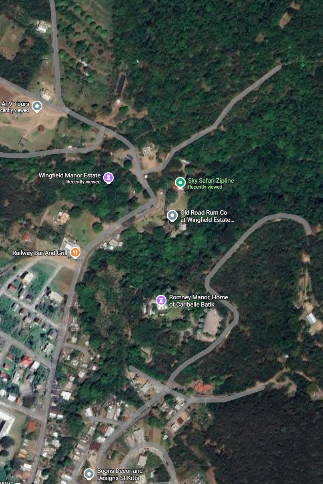

01 지도는 무엇을 기록했는가
다른 지도에서, 조금 더 가까이
Earl Romney — 소유자는 이름으로 적혀 있다
Negro Houses — 여러 사람의 거주지는 집단의 범주와 기호로
집은 지도에 있다. 그러나 그 집에 살던 사람의 이름, 피로, 통증, 다친 뒤의 생활은 — 이 그림에 없다

같은 자리 · 현재
17.326513, −62.802293
출처: McMahon, 1828 · Hicks, 2007, Fig. 15 / UWM · 1779년 지도와 구분